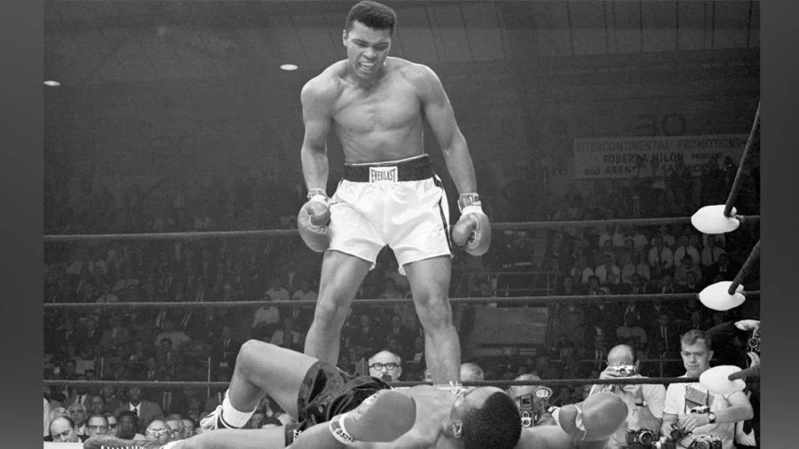
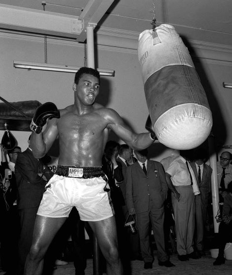
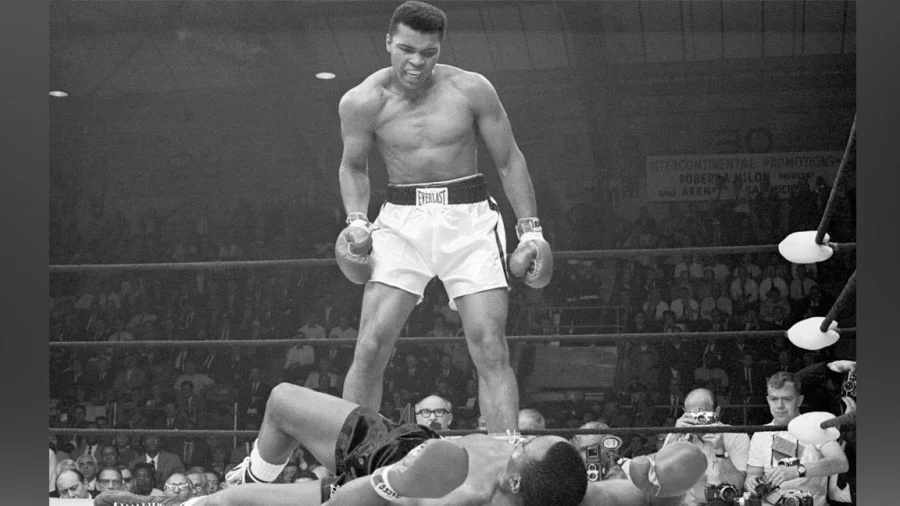
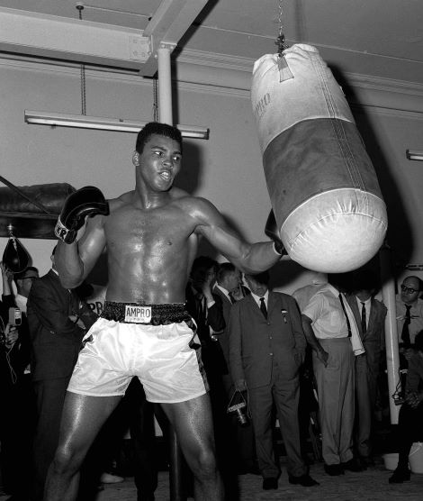

Muhammad Ali
 




One of the Most Prolific Boxers Ever.
Born Cassius Clay in Louisville, Kentucky, Muhammad Ali is consistently ranked as one of the greatest boxers of all time. At the age of 18, Ali traveled to Rome, Italy to participate in the 1960 Olympics. He won the gold medal in light heavyweight boxing and returned to the United States to pursue his professional boxing career shortly thereafter. It was also around this time that Clay became a member of the Nation of Islam, announcing his name as Cassius X, then Muhammad Ali in 1964.
In 1967, Ali had been reigning world heavyweight champion for three years when he publicly refused to be inducted into the American military during the Vietnam War. As a result of his actions, boxing officials decided to punish Ali by stripping him of his titles and suspending him from the game of boxing. During his suspension from 1967-1970, Ali became an activist and toured around the world speaking to civil rights organizations and anti-war groups.
After 1970, Ali regained the title of heavyweight champion after defeating George Foreman in a match known as "The Rumble in the Jungle." He continued fighting until 1981, ending his career with a 56-5 professional record.
Black Power records at the National Archives related to Muhammad Ali consist of the court case (Clay v. United States) relating to his refusal of induction for the Vietnam War draft. There are also records of FBI surveillance of Muhammad Ali in various parts of the country and his time spent with the members of the Nation of Islam. Also, a motion picture, sound recordings and several photographs of Ali at State Dinners and meetings with sitting presidents.